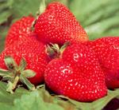
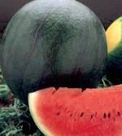
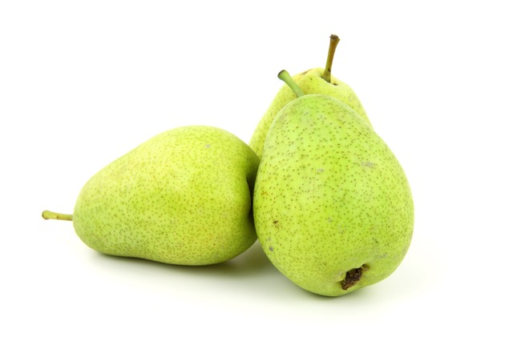

Documentación de las Frutas
Las frutas son, quizás, los alimentos más llamativos por su diversidad de colores y formas. Pero además de lo que muestran a simple vista, forman parte de los alimentos con mayor cantidad de nutrientes y sustancias naturales altamente beneficiosas para la salud.
Si nos detenemos a pensar, veremos que las frutas y todos los vegetales, sobreviven a la intemperie, enfrentando todo tipo de condiciones y agresiones meteorológicas.
Todo ello es posible gracias a las sustancias protectoras y antioxidantes naturales que poseen. En definitiva esas mismas sustancias son las que nos protegen cuando consumimos el alimento.
Es decir que nos beneficiamos absolutamente con todas esas vitaminas y nutrientes que la fruta posee. Llenamos de vida todo nuestro organismo.

A. Delia Luna González.
Bayas
Una baya una pequeña fruta que puede ser de uno o de la combinación de varios de estos cinco sabores:picante , seco, dulce, amargo y ácido.
Arándano

El arándano es un fruto que crece silvestre en zonas frescas del hemisferio norte. Es una baya globosa de color negro azulado que mide unos 6mm de diámetro. Se consume sobre todo en mermeladas, tartas o como acompañamiento de diversos platos. Es un alimento rico en vitaminas que además aporta pocas calorías al organismo.
El arándano es un fruto carnoso que crece silvestre en casi todo el hemisferio norte. Es una baya globosa, de unos 6mm de diámetro y de color negro azulado. Su pulpa es aromática, jugosa y de sabor algo ácido. Contiene numerosas semillas pardas de pequeño tamaño. En la parte superior tiene una pequeña corona que lo distingue de la grosella negra.
El arándano se puede consumir como fruta de mesa, aunque su uso principal es la elaboración de diversos productos derivados, como confituras, mermeladas, purés, compotas, jaleas y zumos. También se preparan arándanos secos y congelados. En algunos países se preparan además sopas y fritos.
Crudos se pueden añadir a macedonias, cereales, crepes y gofres. Se pueden tomar con nata, zumo de naranja o con un chorro de Grand Marnier, un licor de naranja. El arándano rojo se usa para elaborar bollos, panes, pasteles, tartas y sorbetes. También acompaña los platos de pavo.
Los arándanos son un alimento rico en vitaminas A y C, y aportan muy pocas calorías, ya que contienen pocas grasas y proteínas. Son ricos en antocianos, sustancias que tienen efectos beneficiosos sobre el aparato digestivo.
Son un alimento rico en vitaminas A y C
Frambuesa
La frambuesa (Rubus idaeus) es el fruto del frambueso o sangüeso. Esta planta crece silvestre en diversas regiones de Europa, aunque también se cultiva, siendo su cultivo bastante importante. Es una fruta pequeña, cónica o redondeada con una piel aterciopelada de color rojo o amarillento. La pulpa es muy aromática y su sabor es agridulce. Se puede consumir cruda o emplearse para elaborar mermeladas, jaleas y bebidas. También se puede encontrar congelada.
En realidad este fruto está compuesto por numerosas drupas pequeñas y redondeadas que contiene cada una de ellas una semilla, agrupándose en un pequeño receptáculo cónico.
Son conocidas como las fresas del bosque y su sabor es muy agradable aunque a las pocas horas de la recolección se va perdiendo. Las variedades cultivadas suelen ser de mayor tamaño pero con menos aroma y sabor que las silvestres. Al mismo tiempo producen cosechas mayores y más zumo que estas últimas.
Las frambuesas poseen una cantidad moderada de glúcidos. Su contenido en proteínas, lípidos, así como su valor energético es bastante bajo, siendo éste último de 26 kcal por cada 100 g de producto fresco.
Son unas frutas muy perecederas y para aumentar su conservación se pueden introducir en el frigorífico unos 2-3 días. Además, también admiten la congelación. Las humedades relativas óptimas oscilan el 90-95%.
Las frambuesas frescas se suelen consumir solas o con nata. También se emplean en pastelería, para aromatizar postres o preparar zumos y aguardientes. El zumo de frambuesa se emplea para mejorar el sabor de preparados farmacéuticos. Este mismo zumo diluido en agua da lugar al refresco de frambuesa. También se elaboran licores y mermeladas de frambuesa. Para todas estas aplicaciones se suelen utilizar variedades rojas y grandes con pocas pepitas, llamándose coloquialmente pepitas a las semillas que contiene en el interior de un receptáculo.
Poseen una cantidad moderada de glúcidos
Fresa

La fresa es un fruto de color rojo brillante, suculento y fragante que se obtiene de la planta que recibe su mismo nombre. En Occidente es considerada la "reina de las frutas". Además de poderse comer cruda se puede consumir como compota, mermelada,... Es empleada con fines medicinales ya que posee excelentes propiedades que ayudan a preservar la salud.
La fresa (Fragaria vesca) creció durante mucho tiempo espontáneamente en los bosques llegando a tardar en realizarse su cultivo por ser una fruta muy frágil y porque para obtener una cosecha máxima de un mes al año era necesaria una ocupación permanente del suelo.
El fruto comestible se denomina vulgarmente "eterio". Se trata de un falso fruto formado por el receptáculo, en el que se hallan los aquenios (pepitas), pequeños y de color claro en la parte expuesta a la sombra y rojizo oscuro la expuesta al sol. Los aquenios pueden estar hundidos, superficiales o sobresalientes de la pulpa. También pueden ser muy o poco numerosos. Los sobresalientes aumentan la resistencia de la superficie, pero durante el lavado se desprenden muchos de ellos. Generalmente, el consumidor prefiere el fruto con pocos aquenios ya que éstos suponen el inconveniente de quedarse entre los dientes al ser mordidos.
La parte central del fruto o "corazón" puede estar muy o poco desarrollada y puede haber frutos con el "corazón vacío". Ello es un carácter negativo. Los frutos pueden ser de varias formas, según el cultivar: cónicos, cónico-alargado, cónico-redondeado, esferoidales, oblatos, reniformes (forma de riñón).
Se suele recoger a principio del verano. Generalmente, las fresas silvestres son de menor tamaño que las cultivadas, pero su sabor y aroma es mejor y más agridulce.
Las fresas y los fresones son poco calóricos. Su valor energético por 100 g de peso de fruto fresco comestible oscila entre 27 y 34 kcal. Después del agua, su principal constituyente son los hidratos de carbono. La fructosa significa prácticamente la mitad de sus glúcidos y el resto es glucosa en su mayor parte. Posee un bajo porcentaje de proteínas. Esta baya constituye una excelente fuente de vitamina C.
Esta fruta es fácilmente digestible y ejerce un gran efecto laxante. Sus contraindicaciones son escasas, tan sólo deberán consumirlas con prudencia las personas con patologías estomacales debido a su acidez. Cuando estos frutos se consumen en compota o mermelada pierden muchas de sus propiedades nutritivas.
Si las fresas están maduras se suelen consumir crudas, con yogur o helados. También se rocían con nata o licor y bañadas en chocolate son deliciosas. Las fresas de peor presencia se usan para preparar tartas, mousses, soufflés, flanes y pasteles.
Se deben conservar en el refrigerador o en su defecto, en un lugar fresco, oscuro y ventilado. No se aconseja su congelación puesto que tras la descongelación pierden gran cantidad de agua, quedando una especie de mermelada cruda, sin aroma. Es conveniente lavarlas antes de su consumo para eliminar tierra o sustancias nocivas.
Se suele recoger a principio del verano
Grosella Espinosa
La grosella espinosa o también denominada agrazón o uva espina (Ribes grossularia o Ribes uva-crispa) es una baya que según la especie puede ser blanca, amarilla, roja o verde, con una piel espinosa, vellosa o suave. Las diferentes variedades se diferencian entre sí por la época de maduración, sabor, color, tamaño, forma del fruto y modo de consumo. Predomina el fruto amarillento con piel vellosa, aunque existen también variedades de piel rojiza, verde oscura y verde pálida blancuzca.
Su sabor rara vez es suficientemente dulce como para consumirla cruda, por lo que lo habitual es emplearla en la elaboración de diferentes derivados. Así hay variedades aptas para su consumo en crudo como la Early Sulphur. Otras variedades, en cambio, son más adecuadas para su cocción, como la Careless, Leveller, Whinham"s Industry y Howard"s Lancer, y otras los son para la elaboración de mermeladas y conservas, como Keepsake y Lancashire Lad.
Además de esta especie de grosella existen otras como la grosella roja y la negra. Esta especie de grosella, la espinosa, crece en solitario y no en racimos, en Europa y América. No lo hace en racimos y es de mayor tamaño que la grosella roja. Con ella se pueden preparar tartas, sorbetes, jaleas y jarabes. Se añade en puddings, macedonias y chutneys. Para la elaboración de mermelada de grosella espinosa conviene recolectar las bayas cuando todavía presentan un color verde claro, ya que su contenido en pectina disminuye rápidamente cuando se alcanza el punto de madurez. Las grosellas espinosas maduras poseen una piel dura que pierde color con el tratamiento de calor.
Las grosellas espinosas también sirven como guarnición de carnes y pescados. Tienen un alto contenido de ácido cítrico y pectina. Su valor calórico por cada 100 g de producto fresco es entre 34-40 kcal.
Su composición es bastante similar a la de la grosella roja. Es la más rica en vitamina A de todas las especies de grosella, aunque su contenido en minerales y demás vitaminas es muy parecido al de la grosella roja.
Se conservan bien de una a tres semanas en el frigorífico, aconsejando no lavarlas hasta el momento de ser consumidas para evitar el exceso de contenido de agua que favorece la proliferación microbiana. Además son adecuadas para someter a congelación en caso de querer conservarlas más tiempo.
Las bayas acuosas y no demasiado sabrosas son apreciadas en Inglaterra, Francia y Alemania, donde la uva espina es cultivada ampliamente.
Existen otras como la grosella roja y la negra
Grosella Negra

La grosella negra es una baya de pulpa translúcida con tonos rojos o verdes y de sabor agridulce. El fruto es pequeño, de color azul negro y esférico con un sabor intenso cuando está completamente maduro. Esta baya está recubierta de vello y su pulpa contiene muchas semillas pequeñas. Estos frutos no son sueltos sino que crecen en racimos.
El grosellero negro (Ribes nigrum, perteneciente a la familia botánica de las Saxigfragáceas) es el arbusto de donde procede la grosella.
En inglés su nombre significa "baya de ganso" debido a que antaño era el ingrediente principal de una salsa que acompañaba los platos de ganso. La grosella negra se usa para elaborar licores, vinos, jugos y jaleas.
Las grosellas negras son muy ricas en azúcares, ácidos orgánicos y vitamina C. La cantidad de vitamina C de unos 250 ml de grosellas es tres veces superior a la de una naranja pequeña. Las grosellas negras son estupendos laxantes.
Deben consumirse en breve tiempo pues, de lo contrario, se estropean. En frigorífico, a 4ºC de temperatura se pueden conservar durante una semana.
La producción es utilizada en la industria alimentaria que la emplea en la elaboración de jarabes, gelatinas, bebidas aperitivas y refrescantes. Se prepara un licor característico poniéndolo a macerar en aguardiente y agregándole jarabe. También se emplea en farmacias para rectificar sabores y como fuente de colorante para alimentos.
El grosellero negro es el arbusto de donde procede la grosella
Grosella Roja
Las grosellas rojas son unas pequeñas frutas redondas de color rojo. Aunque se pueden consumir crudas, su sabor agridulce las hace indicadas para la elaboración de mermeladas, batidos, helados, etc. Son ricas en vitaminas y minerales.
La grosella es el fruto que procede del grosellero. Es una baya de piel translúcida y color rojo, globosa y con sabor agridulce. Además de la grosella roja, existen otras especies como la grosella negra, la blanca y la espinosa, que se diferencian en el tipo de fruto que dan.
Las grosellas rojas se pueden consumir frescas, aunque generalmente se emplean en la elaboración de productos como compotas, jaleas, mermeladas, gelatinas, cremas, batidos, tartas, helados, zumos, caldos, licores y bebidas refrescantes.
Las grosellas son un alimento saludable que aporta pocas calorías y que es rico en fibra, vitaminas y minerales. Son diuréticas y combaten la gripe y otras enfermedades catarrales.
Es rico en fibra, vitaminas y minerales
Zarzamora
La zarzamora es una planta generalmente silvestre de la que se aprovechan sus frutos, unas bayas pequeñas de color negro muy aromáticas y algo ácidas. Se consumen crudas, aunque también se emplean en la elaboración de compotas, macedonias, tartas, etc. Son ricas en vitaminas y minerales. Además aportan fibra y contienen pocas calorías.
La zarzamora es el fruto de la zarza, un arbusto que crece generalmente silvestre en muchas zonas del planeta. El fruto es una baya de color negro brillante formada por la unión de numerosos frutos pequeños que contienen cada uno una semilla. Es una fruta aromática y algo ácida.
Es una especie conocida desde muy antiguo, y a la que se le atribuyen muchos efectos curativos. Se consumen crudas, solas o acompañadas de helado, yogur o nata. También se emplean en la elaboración de macedonias, compotas, tartas, vinos y aguardiente, etc.
La zarzamora aporta mucha fibra y pocas calorías, al ser pobre en proteínas y grasas. Es destacable su riqueza en vitaminas, sobre todo A y C, y su alto contenido en potasio, lo que la hace diurética. También aporta diversas sustancias que tienen efectos anticancerígenos.
Las bayas acuosas y no demasiado sabrosas son apreciadas en Inglaterra, Francia y Alemania.
Cítricos
Son un conjunto de frutas de sabor ácido o agridulce, como las naranjas y los limones
Limón
El limón es redondo y ligeramente alargado, pertenece a la familia de los agrios y por tanto comparte muchas de las características de otras especies de cítricos, como es tener una piel gruesa. La pulpa es color amarillo pálido, jugosa y de sabor ácido dividida en gajos. El color de la corteza es amarillo y especialmente brillante cuando está maduro.
Se utiliza en fresco para usos culinarios, y su zumo en la industria de preparados alimenticios. Para la industria farmacéutica es materia prima para la fabricación de numerosos medicamentos, y en casa se puede utilizar para numerosos remedios caseros.
Es una fruta de características muy parecidas a los demás agrios porque tanto su piel como su pulpa son similares, aunque el color y el sabor de unos y otros sea totalmente opuestos especialmente si lo comparamos con el fruto más representativo de esta familia, la naranja.
El limón es redondo, ligeramente alargado, posee una corteza fuerte y resistente, es de color amarillo intenso cuando está en plena madurez, brillante que al ser cortada desprende un aroma especial. La pulpa es de color amarillo pálido, jugosa y de sabor ácido dividida en gajos.
Sólo se consume en fresco en el terreno gastronómico, su uso está más aplicado como zumo en condimentos para sopas, bebidas, ensaladas, platos de pescado y cientos de postres de pastelería. Gastronómicamente el limón comparte lugar con la lima mexicana. La lima es un cítrico procedente de Malasia y su cultivo está más restringido a los trópicos y áreas subtropicales húmedas y calurosas puesto que es muy sensible al frío. La lima es un fruto más pequeño, se consume en verde y es muy usado en países como Francia. Las limas se dividen en dos grupos: limas ácidas, con interés comercial y limas dulces. Las limas ácidas a su vez se subdividen en dos grupos: limas ‘Tahití’, ‘Persa’ o ‘Bearss’ del grupo Citrus latifolia y de fruto más grande; y limas ‘Key’ o ‘Mejicana’ del grupo Citrus aurantifolia de fruto más pequeño. Las limas de pulpa dulce son Citrus limettioides y la variedad más cultivada es la llamada lima Dulce de la India. Al no tener acidez, no se utiliza como las otras limas, sustituyendo al limón.
A nivel industrial se utiliza para la extracción de zumo y de aceites esenciales presentes en la pulpa. La cáscara también sirve de alimento para el ganado y para la extracción de pectinas para la industria.
También es muy utilizado en la industria farmacéutica ya que por su elevado contenido en vitaminas: A, B, P, K y sobre todo C, sirve para fabricar numerosos medicamentos.
No sólo tiene poder curativo a través de los medicamentos, sino también a nivel casero lo podemos utilizar como astringente, como tónico digestivo y en más remedios útiles.
Para la industria de la droguería también es una materia prima muy valiosa, como para la fabricación de quitamanchas, detergentes, perfumes elaborados con el aceite extraído de la corteza, etc.
La época de producción se extiende de abril a julio en el Hemisferio Norte, sin embargo gracias a la enorme cantidad de diversas variedades con distintas fechas de maduración se dispone de limones ininterrumpidamente durante todo el año.
El limón es ácido
Mandarina
La mandarina es un fruto similar a la naranja pero más pequeña y achatada por su base. Su corteza es lisa, brillante color rojo anaranjado y es muy fácil de pelar, incluso con las manos. La mandarina se consume principalmente como fruta en fresco, aunque también son conocidos las conservas de gajos de mandarinas.
La mandarina es un fruto similar a la naranja, más pequeña y un poco achatada por su base. Es una de las frutas más populares del mundo por la facilidad con que se pela. La corteza es lisa y brillante, el color varía de amarillo a rojo-anaranjado y la pulpa puede ser dulce o muy dulce.
El fruto posee una forma globosa y deprimida en su base, mide alrededor de 4-7 cm de longitud y 5-8 cm de diámetro.
Su color es variable, puede ir desde el amarillo verdoso hasta el rojo anaranjado, aunque una característica importante es su corteza brillante. Ésta es fácil de pelar y posee numerosas glándulas oleosas hundidas que impregnan las manos de la persona que las presiona, de ahí el característico olor que queda impregnado en los dedos del consumidor. La pulpa es jugosa y dulce, se encuentra dividida en 10-12 gajos, con semillas o no en su interior en función de la variedad de que se trate
La mandarina es una fuente de vitamina C, aunque en menor proporción que la naranja, es rica en fibra y posee un elevado contenido en agua.
La importancia comercial de la mandarina está en su consumo al natural, como postre o tentempié y cada vez es mayor la presencia de esta fruta en los mercados europeos. En la cocina la mandarina se puede utilizar en platos de caza y cerdo, en platos de marisco, en ensaladas, etc. También se utilizan para infinidad de postres, como macedonias, tartas, cremas, etc.
A nivel industrial la mandarina se puede emplear para distintos productos derivados como el zumo, conservas como la mermelada o la confitura, para la elaboración de licor de mandarina extraído de la corteza, para la extracción de aceites esenciales utilizados para la fabricación de licores, en confitería y fabricación de bebidas refrescantes. Pero en general podemos decir que la utilización industrial de la mandarina en zumos y jugos no es excesivamente importante puesto que la naranja posee mejores propiedades para estos usos.
Posee numerosas glándulas oleosas
Naranja
La naranja es un fruto redondo, color naranja, consumido mayoritariamente en invierno. La pulpa del interior es también anaranjada y está formada por pequeñas bolsitas llenas de zumo.
La naranja se usa para consumo en fresco y, para la industria, principalmente en zumo.
La naranja, junto con el plátano y la manzana, es uno de los frutos más consumidos en el mundo.
La naranja es un cítrico y su forma suele ser redonda u oval y su piel y carne es generalmente naranja, excepto en las variedades de pulpa roja.
La parte comestible de la naranja es la pulpa y se consume fresca o en zumo. La naranja también se utiliza para realizar compotas, mermeladas, para consumo como fruta deshidratada, etc.
De la naranja también se extraen los aceites esenciales muy utilizados en perfumería y cosmética.
El consumo de naranjas en países en vías de desarrollo ha aumentado más rápidamente que en los países ricos. El mercado norteamericano abarca casi la mitad del consumo de los países desarrollados, debido en gran parte al consumo de zumo. En países como en Japón el consumo es en fresco y de producción propia, es decir no necesitan importar naranjas.
El consumo medio mundial es de 12 kg por persona y año, aunque esta cifra varía según los países. Los países desarrollados tienen una media de 28 kg/persona y año, mientras que los países en vías de desarrollo es de 6 kg/persona y año. La cifra más alta de consumo es en Estados Unidos alcanzando los 60 kg, mientras que en Europa Occidental es de 40 kg. Estas cifras contrastan con el consumo en los anteriormente Países del Este, 5 kg por persona.
La naranja es un fruto cuyo consumo se centra principalmente en el invierno en el Hemisferio Norte, sin embargo se puede disponer de él fuera de la época invernal gracias a países productores como Argentina, Brasil, Estados Unidos, España, etc.
Tal y como se expone en el Fresh Produce Desk Book del 2001, la disponibilidad de la naranja en el mercado inglés está asegurada prácticamente todo el año. Desde enero a marzo en el Hemisferio Norte es la República Dominicana, Egipto, Israel, Turquía y Túnez la fuente de suministro, en abril y mayo del Hemisferio Norte distintas variedades proceden de Egipto y Estados Unidos. Durante los meses estivales del Hemisferio Norte serán países como Brasil, Cuba, Chile, Argentina, Perú, y Zinbawe la fuente de suministro. Mención especial tiene España que es el primer país exportador de naranjas del mundo y que suministra este cítrico a Reino Unido prácticamente durante todos los meses del año.
Existen una gran cantidad de variedades que se diferencian por la forma, el tamaño, el color de la pulpa: naranja o rojo, por el sabor dado que hay naranjas más dulces o más ácidas, por la época de maduración, y por la existencia o no de semillas.
La época de recolección va desde principios de octubre hasta mediados de junio en función de las variedades. La maduración interna y externa de las naranjas se rige por mecanismos diferentes por lo que muchas veces un fruto que alcanza la maduración para ser comercializado, todavía su color no es el apto para entrar en el mercado por lo que a estos frutos se les someterá a un proceso de desertización provocando la coloración del fruto. Para ello se recolectarán los frutos en verde y se tratarán con etileno en cámaras especiales.
La conservación de las naranjas en cámaras frigoríficas a una temperatura ligeramente superior a su punto de congelación, prolonga el periodo de buenas condiciones organolépticas del fruto y reduce el ataque de hongos.
Su consumo se centra principalmente en el invierno en el Hemisferio Norte
Pomelo
El pomelo es un fruto en forma de globo ligeramente achatado, de corteza lisa o rugosa, de color amarillo pálido o rojizo. Se consume principalmente como fruta fresca, y posee numerosas cualidades digestivas, estomacales y antisépticas.
El pomelo es un fruto en forma de globo o esfera ligeramente achatada, de corteza lisa o rugosa, gruesa de color verdosa pálido que adquieren un color amarillento al madurar y que posee un sabor amargo. La pulpa está dividida en 10-12 gajos que también tienen un sabor amargo debido a la presencia de unas sustancia llamada naringina y puede ser amarilla excepto en las variedades rojizas, que varían de rosa a rojo y tienen un sabor más dulce. Su nombre en inglés, Grapefruit, hace referencia a que los frutos crecen formando racimos.
Se consume como fruta fresca, siendo el zumo de pomelo la única utilización a nivel industrial. También puede utilizarse en la cocina para acompañar carnes como la de pato, pollo, cerdo o incluso como complemento con gambas.
Existe una enorme confusión entre los frutos pomelo y toronja. Es un error generalizado que mucha gente piense que se trata de la misma fruta. En realidad la toronja, Citrus Grandis, es otro fruto cítrico diferente al pomelo, cultivado exclusivamente en climas tropicales y casi no tiene importancia en el comercio mundial.
Aparece en el mercado en el Hemisferio Norte a principios del invierno y se mantiene hasta mayo o junio gracias a su conservación en cámaras frigoríficas.
Es como todos los cítricos muy rico en vitamina C y posee muchas cualidades curativas entre las que destacan la prevención de ciertos cánceres y propiedades digestivas, estomacales, antisépticas, tónicas y diuréticas.
Es cultivado exclusivamente en climas tropicalesa
Cucurbitáceas
Familia de plantas dicotiledóneas, del orden cucurbitales, rastreras o trepadoras, de hojas sencillas, flores de cinco pétalos y fruto en pepónide.
Melón

El melón puede ser redondo o alargado, de corteza amarilla, verde o combinada según la variedad. La pulpa es aromática, jugosa y dulce, resultando una fruta ideal para calmar la sed.
El melón es una fruta globosa, redonda o alargada, de 20 a 30cm de largo y hasta 2kg de peso. La corteza surcada o reticulada puede ser de color amarillo claro, verde o combinaciones de ambos según la variedad, la pulpa es aromática, jugosa y dulce, puede ser blanca o blanca verdosa, amarilla y anaranjada. Dentro tiene numerosas pepitas con cáscara amarilla.
El consumo principal del melón es fresco como postre, aunque también se utiliza en la elaboración de diversos platos como ensaladas y aperitivos, combinado con jamón por ejemplo. Además, se pueden preparar mermeladas, purés, cremas, yogures, licores, granizados, sorbetes, etc. La corteza se utiliza como recipiente para preparar macedonias; las semillas se consumen comúnmente en África y de ellas se puede obtener aceite comestible o usado en iluminación.
El melón es muy rico en agua, hidratos de carbono y en algunos minerales y vitaminas. Resulta una fruta ideal para calmar la sed.
La temporada del melón en el hemisferio norte va de julio a septiembre, aunque fuera de esa época es posible gracias al gran número de variedades y a su cultivo en invernaderos.
Se pueden preparar mermeladas, purés, cremas, yogures, licores, granizados y sorbetes
Sandía

La sandía es un fruto grande y de forma más o menos esférica que suele consumirse cruda como postre. Su pulpa es de color rojizo o amarillento y de sabor dulce. Resulta un alimento muy refrescante que aporta muy pocas calorías al organismo, también aporta algunas vitaminas y minerales.
La sandía es un fruto grande, de hasta 25cm de diámetro, que puede alcanzar los 15kg de peso. La forma es ovalada o esférica, con una corteza lisa y de color verde oscuro, que a veces presenta bandas irregulares más pálidas. La pulpa es dulce, jugosa, refrescante y de color amarillento o rojizo. Contiene muchas pepitas de color negro, marrón o blanco. Algunas variedades cultivadas en los últimos años, cambian estas características clásicas de las sandías, dando frutos sin semillas, variedades con la pulpa amarilla o sandías de menor tamaño.
La sandía se consume generalmente en crudo, en rodajas, cuartos o incluso en bolas. También se emplea para elaborar sorbetes, purés, mermeladas y confituras. En Rusia preparan un vino muy popular a partir de zumo de sandía. La corteza se aprovecha a veces encurtida o confitada y en los medios rurales sirve como alimento del ganado. Las semillas se consumen en algunas regiones tostadas y saladas.
Es un alimento muy rico en agua que apenas contiene grasas y proteínas, por lo que aporta muy pocas calorías. Además es una fuente importante de potasio y vitamina A. Es un fruto refrescante y con propiedades diuréticas. En muchos países americanos es usada con fines medicinales.
Se emplea para elaborar sorbetes, purés, mermeladas y confiturasa
Exóticas
Las frutas exóticas son frutas completamente naturales y ecológicas que nacen por mutación en su método de cultivo
Aguacate
El aguacate (Persea americana Mill.) es un fruto exótico carnoso que se obtiene del árbol tropical del mismo nombre. En algunas partes de América del Sur se conoce como Palta. Presenta unas dimensiones de 5-6 cm de longitud. El peso normal oscila entre 200-400 g, aunque pueden encontrarse piezas de hasta 2 kg de peso. La corteza es gruesa y dura de color verde cuyo tono depende de la variedad. La pulpa es aceitosa de color crema a verde amarillento, con un sabor similar a la nuez. Posee una única semilla redondeada de color pardo claro y 2-4 cm, que aparece recubierta de una delgada capa leñosa.
El fruto es una baya unisemillada, oval, de superficie lisa o rugosa. El envero se produce sólo en algunas variedades y la maduración del fruto sólo cuando éste se separa del árbol.
La polinización de esta especie es efectuada por abejas y otros insectos de tamaño similar.
Este fruto se caracteriza por un elevado porcentaje de grasa. Es muy energético y se desaconseja su uso al final de las comidas. Concretamente, 100 g de este producto aportan entre 128 y 233 kcal. Es una fruta muy rica en minerales, principalmente potasio, hierro y fósforo. El aguacate es una fruta muy baja en hidratos de carbono, no llega ni a 2 gramos por cada 100, cuando por ejemplo una manzana llega a 14 gramos. Sin embargo es llamado la "mantequilla vegetal" por ser muy rico, como se indicó anteriormente, en grasa. Pero esta grasa se trata de una grasa saludable, vegetal, insaturada y sin colesterol.
Se puede consumir tanto crudo como cocido, empleándose más como una hortaliza que como fruta. Carece de un sabor dulce o ácido característico, lo que permite su combinación con muchos platos.
Los aguacates se pueden adquirir durante todo el año. El color de la piel depende de la variedad y no indica el grado de madurez del fruto. El momento óptimo de su consumo viene marcado por la blandura de la pulpa, cuando se puede untar como mantequilla. Los que no estén totalmente maduros se dejan 2 ó 3 días madurar a temperatura ambiente, pudiendo detener su maduración introduciéndolos en el frigorífico. De todos modos, hay que tener en cuenta que este fruto no soporta temperaturas muy bajas.
El procedimiento de su cosecha para su comercialización se realiza determinando el punto de maduración comercial, que es el momento aconsejable para su comercialización y consumo. Uno de los índices utilizados para determinar el punto de maduración es el porcentaje de aceite de los frutos. En California el contenido mínimo de aceite para cosechar debe ser de un 8% y en Israel de un 10%.
Es una especie subtropical exigente en sus condiciones climáticas, por lo que su cultivo se reduce a zonas con temperaturas superiores a la isoterma de 16-17ºC, y que en España corresponde con la zona costera entre Málaga y Almería.
Su principal problema de comercialización es que una vez recolectado, su proceso de maduración es muy rápido, por lo que es necesario seleccionar tecnologías pos recolección que retrasen la crisis climatérica y/o la síntesis de etileno.
Los aguacates se pueden adquirir durante todo el año
Carambola
La carambola (Averrhoa carambola) es una fruta tropical que se comercializa en Europa desde hace poco tiempo. Es también llamada la fruta estrella, debido a su forma estrellada al cortarla de forma transversa.
Su piel es fina, comestible, de un amarillo claro que se transforma en amarillo dorado cuando la fruta está madura. Posee una pulpa translúcida, crujiente, jugosa y ácida. Las variedades más grandes son las más dulces. Suele medir entre 7 y 12 cm. Las de mayor tamaño son de color dorado, más dulces y con una leve nota de acidez. Las variedades más pequeñas son muy agrias y tienen tonalidades pálidas, verdes o amarillas.
Pueden consumirse frescas, en ensaladas o en zumo. Se utilizan normalmente para la decoración de todo tipo de platos dulces y salados. Al cortarlas transversalmente en rodajas se obtiene una bonita estrella. Cuando está madura la piel se retira fácilmente. Resultan muy decorativas en platos de carne, postres, tartas o bebidas espumosas, cócteles y ponches.
Constituye un alimento ideal por su aporte de vitamina C y de minerales como el calcio, magnesio y fósforo. Por cada 100 g de pulpa se aportan al organismo 40 calorías.
Los países productores de esta fruta tropical son Malasia, Tailandia, Indonesia y Brasil.
La temperatura de conservación recomendada es de 5ºC y la humedad relativa óptima oscila el 90 y 95%.
Se comercializa en Europa
Coco
El coco (Cocos nucifera L.) es un fruto redondo y alargado de carne blanca, fibrosa y aceitosa cubierta por una cáscara dura, de color marrón y peluda. El coco tiene una envuelta fibrosa, una carne blanca dentro que recibe el nombre de copra y, cuando el fruto está aún tierno, un líquido lechoso que se suele usar como alimento básico de algunas zonas. Existe un uso predominante del coco en la producción de copra: la médula desecada del coco, de la que se obtiene aceite. Los residuos que quedan de la obtención de copra se usa para pasto animal. Aunque el aceite de coco no es uno de los aceites vegetales más importantes, se trata de un aceite láurico, y como tal merece un lugar en el mercado mundial. El fruto del cocotero es el coco y también se dedica a su procesado.
De estas palmeras (cocoteros), se puede extraer además de cocos, las nueces de cocos. La nuez de coco pesa por término medio 2,5 kg y no es realidad una nuez, sino un fruto en drupa. De éstas se elaboran cuerdas y otros productos de fibra gracias a su envoltura fibrosa externa. También, estas nueces poseen una almendra que puede ser consumida fresca o seca, obteniéndose la copra. Mediante la incisión de las inflorescencias del cocotero y recolección del líquido (savia) que exuda de ellas, se obtienen bebidas fermentadas, vinagre de alcohol o azúcares. El cogollo terminal de la palmera puede ser consumido, fresco, cocido o como legumbre (col de coco). Con la cáscara del coco se pueden hacer recipientes de beber y para otros usos, así como también se puede usar como carbón.
Los cocos verdes jóvenes tienen mucha leche y poca pulpa, pero muy buen sabor y consistencia gelatinosa, siendo muy apreciados en las zonas productoras para su consumo. Los cocos son un ingrediente básico en la cocina malaya, india e indonesia: la pulpa recién rallada se añade a los pasteles, el arroz, la carne o el pescado. En Europa y otras zonas no productoras de coco, el coco rallado da una nota exótica a las ensaladas y compotas, matiza el sabor de las cremas, pudines, helados, galletas, tartas y pasteles. Se puede emplear para empanar la carne, el pescado o las verduras.
El coco contiene muchas calorías por el alto contenido de aceite que posee. Su valor energético es de unas 363,3-669 kcal por cada 100 gramos de producto fresco. El potasio es uno de sus componentes minerales más importante. Cada 100 gramos de producto fresco comestible aportan entre 315-650 g de potasio y 810 g de selenio.
Actualmente el cultivo del coco se ha extendido a muchas áreas templadas, siendo de gran valor comercial.
Los cocos verdes jóvenes tienen mucha leche y poca pulpa
Chirimoya
La chirimoya es una fruta tropical de forma oval, cónica, esférica o en forma de corazón, de 7,5-12,5cm de longitud y con un peso entre 150g y 1kg. La piel es reticulada y de color verde. La pulpa blanca es jugosa, dulce, muy aromática y de sabor dulce algo ácido. Contiene numerosas semillas aplastadas de color negro de 1cm de longitud.
Es un fruto originario de los Andes, desde donde se extendió por América Central y algunos países Mediterráneos.
Se consume sobre todo como fruta fresca. También se añade a macedonias y sorbetes y se puede usar para elaborar mermeladas, batidos o helados.
La chirimoya es un alimento rico en vitaminas y minerales. Destaca por su contenido en vitaminas A y C y en fósforo y calcio. Es adecuada para personas con problemas cardíacos, hepáticos o renales.
Originaria de los Andes
Dátil
El dátil (Phoenix dactylifera) es el fruto de la palmera datilera. Es una baya oblonga de 4-8 cm de longitud de color amarillo dorado o rojo parduzco en la madurez. Su carne es blanda, aromática y de sabor dulce. En su interior posee un hueso alargado con un surco longitudinal.
Los dátiles pueden consumirse frescos o secos y constituyen un alimento básico para los habitantes del norte de África y el Cercano Oriente, quienes son los principales productores.
Estos frutos poseen un sabor parecido a la miel y crecen en racimos en la copa del árbol, a unos 25 m de altura.
En Norteamérica se asocian con las comidas dulces y en los países árabes se consumen rellenos, confitados, destilados, en ensaladas y con cuscús. En la India se utilizan para preparar chutneys y curry. En los oasis del Sahara y en otros del norte de África se elaboran tortas de dátiles que se destinan a la alimentación de las caravanas. En Oriente Medio se elabora el vino de palma o toddy mediante la fermentación de la savia azucarada extraída de la corona de la palmera datilera.
Los dátiles secos se conservan en lugares frescos y secos durante varios meses, incluso un año. Las variedades blandas en el refrigerador se conservan sobre dos semanas. La humedad relativa óptima de este fruto se halla comprendida entre el 70-75%.
Contienen un gran valor alimenticio que radica en su contenido en azúcares muy asimilables y en proteínas, en calcio, fósforo, hierro y vitaminas del grupo B y A.
Poseen un sabor parecido a la miel
Fruta de la Pasión

La fruta de la pasión es una fruta tropical que proviene de diversas especies de plantas del género Passiflora. Se consume por su pulpa, que es jugosa, dulce y algo ácida, con la que además se pueden preparar helados, sorbetes, zumos, etc. Es un alimento rico en vitaminas y minerales. También aporta fibra y es bajo en calorías.
La fruta de la pasión o granadilla es una fruta carnosa tropical obtenida de diversas especies del género Passiflora, como la fruta de la pasión púrpura, la fruta de la pasión amarilla, la granadilla dulce, la badea, la cholupa y la curuba. El tamaño del fruto varía entre 4cm de la fruta púrpura y los 26cm de la badea, y el color puede ser amarillo, naranja, verde, marrón o rojo según la especie y la variedad.
El nombre de fruta de la pasión se debe a que los misioneros jesuitas en el siglo XVI vieron en su flor las marcas de la pasión de Cristo.
Esta fruta se puede consumir tal cual con una cucharilla o en ensaladas de frutas. También se usa para dar sabor a cócteles y ponches y en zumos, batidos, sorbetes, cremas y helados. Es muy apreciada en confitería y pastelería. La cáscara del fruto deshidratada se usa como suplemento alimenticio de animales.
Es un alimento bajo en calorías y con mucha fibra, por lo que resulta indicado para personas que quieren adelgazar. Además aporta cantidades importantes de vitaminas y minerales
.
Se consume generalmente por su pulpa
Kiwi

El kiwi es un fruto de forma ovoide, de tamaño variable y recubierto de una piel fina de color marrón, ligeramente vellosa. Puede tener de 4 a 7,5cm de longitud por 3,5 a 5cm de anchura y el peso varía de 30-150g en función de la variedad, las condiciones climáticas y del sistema de cultivo. La pulpa puede ser de color verde de distinta tonalidad según la variedad, tierna, jugosa y de sabor agridulce. Presenta numerosas y pequeñas semillas negras comestibles. El color de la pulpa y el sabor delicado de la misma que recuerda en parte a la uva, a la fresa y a la piña, lo hacen muy agradable.
El kiwi se consume en fresco como fruta, en macedonia, ensaladas o acompañando a diferentes platos. Para consumirlo como fruta puede pelarse entero o bien partirlo por la mitad y comerlo a cucharadas. Contiene una enzima llamada actinidina que degrada las proteínas, razón por la cual, se puede emplear para ablandar la carne antes de cocinarla y así reducir el tiempo de cocción, frotando ésta con la pulpa del fruto. Además, la actinidina evita la coagulación de la gelatina y, asimismo, es la responsable de que los productos lácteos, si se consumen mezclados con kiwi, presenten un sabor amargo. También se puede cocinar el kiwi, rehogado con mantequilla, a modo de salsa agridulce, como guarnición para platos de carne. Se pueden elaborar mermeladas, sorbetes, granizados, productos de repostería e incluso licores con o sin alcohol.
El kiwi constituye una fuente excelente de vitamina C, contiene casi el doble que algunos cítricos. También es rico en minerales como potasio, hierro y calcio.
Se pueden encontrar kiwis durante todo el año porque hay un relevo entre las distintas épocas de cosecha de cada país productor; desde mediados de mayo hasta finales de noviembre, en Nueva Zelanda; el resto del tiempo en los países mediterráneos, Chile y también en California y Australia. Es un producto que se ha desarrollado comercialmente en los últimos años, gracias a una labor de marketing realizada por Nueva Zelanda que constituye un ejemplo de cómo dar a conocer un ‘nuevo producto’.
Los kiwis pueden llegar a conservarse 6 meses y la maduración es lenta, se produce a temperatura ambiente y para acelerarla, pueden guardarse junto con manzana o plátano, que desprenden etileno; sin embargo, si se quiere retardar la maduración y así ampliar el tiempo de conservación, ésta práctica no es aconsejable. El kiwi es un fruto climatérico cuya intensidad de respiración está influenciada y correlacionada con el etileno presente en la atmósfera o con el de origen endógeno.
Es rico en minerales como potasio, hierro y calcio
Litchi
El litchi es un fruto oriental redondeado, de unos 2,5-4cm de diámetro. Es de color rojo con la piel rugosa. La pulpa es blanca, dulce y jugosa. Se suele consumir crudo, aunque en China se combina con la carne y el pescado. También se usa en helados o batidos. Es un alimento que aporta vitaminas y minerales al organismo.
El litchi es un fruto de unos 2,5-4cm de diámetro y 20g de peso. La piel es generalmente de color rojo o rosado y está cubierta de pequeñas protuberancias o rugosidades, recordando un madroño. La pulpa es blanca, consistente y algo dura, con una semilla en su interior. Este fruto tiene un sabor dulce y algo ácido.
Generalmente se consume crudo, como fruta fresca, aunque se puede emplear en macedonias. En la cocina china los litchis se combinan con carne o pescado. También se utilizan para elaborar helados o batidos. Se pueden conservar desecados o enlatados en almíbar.
Es una fruta rica en vitaminas C y B y en minerales como potasio, calcio, magnesio, hierro, cobre y fósforo. Medicinalmente se usan los frutos, los huesos y las raíces y tiene múltiples efectos beneficiosos para el organismo.
Es un alimento que aporta vitaminas y minerales al organismo
Mango
El mango (Mangifera indica L.) está reconocido como uno de los 3 ó 4 frutos tropicales más finos. Es una fruta que se obtiene del árbol del mismo nombre.
Tiene forma ovalada o esferoidal, con la piel no comestible y color variable de amarillo pálido a rojo intenso. La pulpa es pegajosa y su coloración también varía desde amarillo a anaranjado. El sabor del mango maduro es dulce, y bastante ácido cuando aún está verde. Es una fruta jugosa y fibrosa, siendo menso fibrosas las variedades mejoradas. Todas ellas, ya sean variedades mejoradas o no, poseen un hueso interior. Su tamaño varía entre 5-20 cm de longitud, con un peso de 300-400 g, llegando algunas piezas a alcanzar más de un kilo.
El mango es también conocido como "melocotón de los trópicos" por su anaranjado color y agradable sabor. El más fiable signo revelador de su madurez es su olor. Cuando el fruto está maduro al ser presionado con los dedos cede fácilmente.
Por su extraordinario sabor, aroma, color y textura resulta ideal para consumir solo, en macedonias, elaborar sorbetes, tartas y mermeladas, mezclar en ensaladas e incluso cocinar como condimento de carnes y pescados. En la India, el mango verde es el ingrediente básico para elaborar el tradicional chutney.
Los mangos son laxantes y altamente nutritivos. También son una importante fuente de vitamina A y algo menor de B y C.
Por cada 100 g de mango comestible aporta 60,28 kcal, 0,5 g de proteínas, 0,10 g de grasa, 15,30 g de hidratos de carbono, y 1,50 g de fibra.
Entre los minerales, destaca el hierro, pero también aporta potasio, fósforo, sodio y calcio.
Los mangos maduros no soportan bien el transporte porque son muy sensibles a golpes y les dañan las bajas temperaturas (menores de 13ºC). Las frutas cosechadas verdes pueden alcanzar su punto de maduración a una temperatura entre 25 y 30ºC.
Las temperaturas óptimas de conservación para este tipo de fruta son los 13ºC para mangos maduros y verdes, así como las humedades relativas óptimas oscilan los 90-95%.
El mango que aún está verde se ha de mantener a temperatura ambiente hasta que alcance el punto óptimo para su consumo. Sólo si se quiere consumir frío se puede mantener en el refrigerador antes de servirlo y sólo durante el tiempo necesario para enfriarlo.
Los mangos son laxantes y altamente nutritivos
Papaya
La papaya es una fruta tropical que se consume por su pulpa principalmente, que suele ser de color anaranjado y de sabor dulce y jugoso. También se aprovechan sus semillas secas. Se puede tomar como fruta fresca, cocida o en diversos preparados como helados, refrescos y jaleas. Es un alimento bajo en calorías y altamente digestivo.
La papaya es una fruta tropical de forma ovalada o aperada, que mide entre 10 y 20cm y pesa normalmente entre 500 y 1.000g, aunque puede alcanzar los 5kg. Se trata de una baya con la piel fina y de color entre el verde amarillento y el naranja. La pulpa es roja anaranjada o amarilla, dulce y muy jugosa. Dentro presenta una cavidad donde se encuentran las semillas, que son de color negro grisáceo.
De la papaya se consume tanto su pulpa como sus semillas secas. Los frutos maduros se toman generalmente como fruta fresca, en rodajas, con azúcar y zumo de lima o en ensaladas de frutas. Las papayas verdes se consumen como fruta cocida. También se elaboran diversos productos como confituras, refrescos, helados y jaleas, además de hacerse conservas con ella.
Es un producto con un bajo aporte calórico que apenas aporta proteínas y grasas. Es rico en vitaminas A, C y en potasio. Además contiene papaína, una enzima que degrada las proteínas y que lo hace una fruta muy digestiva.
Se trata de una baya con la piel fina y de color entre el verde amarillento y el naranja
Piña
La piña tropical o piña americana (Ananas comosus) es la fruta obtenida de la planta que recibe el mismo nombre. Su forma es ovalada y gruesa, con aproximadamente 30 cm de largo y 15 cm de diámetro.
La pulpa comestible se halla rodeada de brácteas verdes que pasan a anaranjadas al madurar, formando la piel del fruto. En el extremo superior las brácteas se transforman en una corona de hojas. La pulpa, amarilla o blanca es carnosa, aromática, jugosa y dulce. En su interior hay un tronco fibroso duro que va desde la corona al pedículo.
La piña madura tiene una fragancia muy singular. Es de hermoso color y agradable sabor agridulce. Se puede comer cruda o como ingrediente en zumos, conservas, licores, etc. Tanto el fruto como las hojas se usan en la preparación de compuestos medicinales.
La planta es herbácea y las inflorescencias nacen en lo alto. Estas inflorescencias son ovaladas. El fruto es una infrutescencia que está formado por un conjunto de frutas. Es carnoso y termina en una corona de hojas. Se propaga por esquejes y prefiere el calor.
La piña tiene un contenido en agua muy alto. Los glúcidos ocupan el segundo lugar y el aporte de proteínas y lípidos es muy escaso. El valor calórico, teniendo en cuenta su composición es muy bajo. Cada 100 g de producto fresco comestible aportan entre 64 y 101 kcal. Por ello es muy adecuada en dietas de adelgazamiento.
La piña americana se suele consumir fresca, sola o en macedonias. También forma parte de pasteles y diversas preparaciones. Gran parte de la producción mundial se destina a la industria conservera para obtener piña en almíbar. Otro gran uso es para la obtención de zumo de piña. Esta fruta sirve igualmente de materia prima para elaborar compotas, mermeladas y confituras. En la cocina china es un ingrediente principal combinándola con cerdo y pato.
Es una fruta muy sensible a los cambios bruscos de temperatura. Las temperaturas aconsejadas para piñas parcialmente maduras son entre 10-13ºC y para piñas maduras de 7-10ºC. Así. las humedades relativas óptimas de esta fruta son entre 85 y 90%.
La piña tiene un contenido en agua muy alto
Plátano
El plátano o banano es una fruta amarilla, de forma alargada, que encontramos en el mercado en grupos de tres a veinte, de forma similar a un pepino triangular, oblongo y normalmente de color amarillo. Su sabor es más o menos dulce según la variedad.
Hay confusión en cuanto al nombre, en todos los países del mundo exceptuando España, se conoce con el nombre de plátano si se come cocinado y banano si se refiere al fruto maduro que se consume en fresco. En España se llama plátano al fruto que se consume en fresco y el banano prácticamente no existe. Aunque actualmente, cualquier tipo tiene diferentes usos y los plátanos pertenecen a un subgrupo de cultivares.
El consumo en fresco como postre del plátano es el más normal, incluso frito, pero además, otros plátanos, como el plátano macho, se cocinan y consumen cuando todavía están verdes. Una parte de los plátanos maduros se utiliza para producir crujientes rodajas de plátano deshidratado o harina de plátano. También en algunas zonas del Este de África los plátanos maduros se usan para elaborar una cerveza con bajo contenido en alcohol. Otros productos son el puré, zumo, licor y golosinas.
Además esta fruta es una buena fuente de energía, ya que aporta entre 88 y 95kcal/100g y es una fuente importante de vitamina A y potasio.
Se pueden distinguir algunas variedades por su diferencia de tamaño, color, que puede ser verde, amarillo o rojo, sabor más o menos dulce y su forma de consumo.
Los plátanos se pueden recolectar todo el año, incluso en un año se pueden hacer tres recolecciones y su abundancia depende de la estación. Los destinados a la exportación se recogen verdes y se llevan en barcos frigoríficos hasta su destino. Posteriormente maduran con facilidad en cámaras acondicionadas para ello. En el proceso de maduración el almidón de la fruta se transforma en azúcar y al mismo tiempo se forman las sustancias aromáticas y los ácidos que equilibran la dulzura. Una vez maduros no se deben meter en el frigorífico doméstico porque pierden sabor con el frío y pueden estropearse.
En algunas zonas del Este de África los plátanos maduros se usan para elaborar una cerveza con bajo contenido en alcohol
Fruta Dulce
Estas frutas contienen una mayor cantidad de fructosa que las frutas ácidas. Es un azúcar natural, por lo que las frutas con grandes cantidades de fructosa saben dulce.
Albaricoque
El albaricoque es un fruto similar al melocotón pero mucho más pequeño, de color amarillo pálido o anaranjado con alguna sombra roja. La pulpa no es muy jugosa, tiene cierta textura fibrosa y consistencia harinosa cuando el albaricoque está maduro. Se consume principalmente como fruta fresca, aunque también se utiliza para fabricar algunos derivados como compotas, mermeladas, zumos y los famosos ‘orejones’ que no son más que albaricoques secos.
El albaricoque pertenece a la familia de las Rosáceas y presenta generalmente una forma esférica aunque también puede ser achatado, de unos 3 cm de diámetro. Al albaricoque también se le llama ‘alberchigo’ y exteriormente se parece mucho al melocotón aunque mucho más pequeño y más pálido de color. El albaricoque también es conocido por el nombre de damasco o damasquino y en otras países del Caribe y México lo llaman chabacano.
El color varía desde amarillo pálido hasta anaranjado y muchos albaricoques muestran una suave sombra roja en la zona que estuvo más expuesta al sol. La piel es pubescente, la pulpa no es muy jugosa y tiene una agradable textura firme que tiende a ser algo fibrosa y de consistencia harinosa cuando el albaricoque está muy maduro.
El albaricoque posee una semilla en forma de almendra recubierta de una corteza leñosa dura o endocarpio, que generalmente está desprendida de la carne. Dicha almendra o embrión posee un sabor amargo y no comestible e incluso en algunas variedades resulta venenosa debido a su contenido en una sustancia llamada amigdalina, de la cual se puede extraer uno de los venenos más activos conocidos: el ácido cianhídrico.
Los albaricoques han de consumirse bien maduros ya que solamente con una buena exposición a la luz solar se producen unos frutos sabrosos. La mejor época de consumir albaricoques en el hemisferio norte, es entre julio y septiembre.
Los albaricoque se consumen frescos como fruta de mesa o emplearse para la fabricación de diferentes productos derivados. Cuando se consumen en fresco, es aconsejable lavarlos previamente para eliminar impurezas y suciedad que puedan contener.
Entre los derivados del albaricoque se encuentran confituras, compotas, zumos, mermeladas, albaricoques enlatados y sobre todo los famosos ‘orejones’ que no son más que albaricoques secos. Se obtienen a partir de albaricoques frescos sometidos a un proceso de secado en cámaras a 65-70ºC o al sol tras haberles quitado la piel, lo que aumenta considerablemente su período de conservación. Al disminuir su contenido en agua, se produce una concentración importante de nutrientes, por lo tanto el valor nutritivo del orejón es muy superior al del albaricoque fresco.
El albaricoque pertenece a la familia de las Rosáceas
Cereza
La cereza es un fruto que puede consumirse fresco o utilizarse en la elaboración de tartas, mousses, mermeladas y compotas. Generalmente las cerezas de mayor tamaño son las que tienen mejor textura y sabor.
La cereza es especialmente apreciada por los niños. La facilidad con que puede separarse y escupirse el hueso, la hacen una fruta divertida.
Este fruto, en el hemisferio norte, es de verano. Fuera de temporada puede adquirirse en conserva. Cuando se compran cerezas dulces frescas, se debe elegir aquellas que sean pesadas y de color rojo oscuro o negro. En el caso de las cerezas ácidas el color a seleccionar es el rojo claro o el rosado amarillento. En ambos casos el tallo estará bien unido a la cereza.
Las cerezas pueden consumirse frescas o emplearse como materia prima de otros productos alimenticios, tartas, mousses, sorbetes, jaleas, mermeladas, compotas o bebidas son ejemplos de cómo podemos consumir este fruto.
Este fruto, en el hemisferio norte, es de verano
Ciruela
La ciruela es una fruta de hueso, redonda o alargada que puede ser de color amarillo, verde, rojo o lila. En general es muy nutritiva y rica en vitaminas, destacando la vitamina C. Según su contenido en agua es más o menos jugosa. Las ciruelas pasas o deshidratadas se conservan más tiempo y son muy dulces.
En el mercado hay otros productos elaborados con ciruela como son mermeladas, zumos y licores.
Las ciruelas se pueden consumir frescas como postre o se puede utilizar para elaborar pasteles rellenos, mermelada, gelatina, zumo, licores, etc. Algunas especies pueden desecarse sin fermentar, como las ciruelas pasas, de las cuales hay en el mercado unas menos deshidratadas de sabor muy agradable. La ciruela pasa se conserva durante más tiempo que la ciruela fresca.
Es un alimento muy energético, ya que tiene entre 36 y 52kcal/100g. Además, cien gramos aportan unos 5mg de vitamina C.
La ciruela, junto con el melocotón, la pera y la almendra, pertenece a la familia de las Rosáceas y al género Prunus, el cual incluye algunos árboles y arbustos que son puramente ornamentales.
La estructura de todos los frutos pertenecientes al género Prunus es, de hecho, similar a los frutos individuales de zarzamoras o frambuesas; el hueso que hay en su interior es la parte más dura del ovario, y la más carnosa es la capa más externa del ovario. La semilla está dentro del hueso. Los botánicos se refieren a tales frutos como ‘frutos de hueso’. Sólo la semilla o almendra del almendro dulce se come normalmente; en otros frutos del género Prunus la almendra es desagradablemente amarga y usualmente se desecha.
Existen distintas variedades de ciruela, pueden ser redondas o alargadas, de diferentes sabores y colores, pueden ser de color amarillo, verde, rojo o lila y pueden variar en tamaño y textura; así como su contenido en agua también es variable y los diferentes usos de cada una de las variedades.
La época de cosecha va desde mediados de junio hasta agosto, aunque la recolección puede ser más temprana en algunas variedades más precoces y en determinados lugares. Las ciruelas se pueden conservar en cámaras frigoríficas durante un tiempo y una práctica útil, aún poco extendida, es la de la pre-refrigeración.
La ciruela pertenece a la familia de las Rosáceas
Higo
El higo se considera un falso fruto, es un receptáculo que contiene cientos de pequeños frutos que vulgarmente llamamos pepitas. Se utiliza como fruta para consumo en fresco, desecado, como puré para confiterías, en conserva o confitados.
Los higos son frutas muy frágiles, lo que su conservación en buenas condicione es un tanto difícil. Es por esto que la importancia comercial de los higos secos y en conserva haya aumentado.
Dado que es una fruta perecedera, el higo maduro no se conserva más de 3 días en la nevera.
El primer fruto de la higuera producido a finales de la primavera recibe el nombre de breva. Su piel fina y su sabor, es similar a la de los higos aunque no son tan dulces como ellos.
Además de utilizarse como fruta para consumo en fresco, los higos se utilizan para fabricar puré que sirve de relleno en distintos productos de confitería o incluso para la obtención de una especie de vino.
Entre los derivados obtenidos los más importantes son los higos desecados obtenidos mediante la desecación de la fruta fresca. Su humedad se reduce del 80% al 15%, con o que los compuestos nutritivos del higo se concentran.
Su período de conservación es alto y el fruto se presenta aplastado, flexible, de color gris violeta o pardo con pulpa amarillenta y algo viscosa. Junto con las uvas pasas constituye una de las frutas desecadas mas populares y antiguas.
Otro uso muy utilizado es la conserva de higos, elaborada con higos otoñales de tamaño reducido muy dulces, a los cuales se les añade azúcar y algún licor
como ron, coñac o jerez.
Los higos confitados suelen presentarse en cajas de hojalata, y para fabricar higos en alcohol se requiere higos pequeños de color oscuro, consistentes pero que no hayan alcanzado la maduración.
Si se tuestan los higos y se muelen, el polvo que da lugar se puede utilizar como sucedáneo del café.
El higo, contrariamente a lo que se piensa, no es un fruto. Es un receptáculo carnoso denominado ‘sicono’ en forma de pera que sirve de soporte a las flores masculinas y femeninas que originarán pequeños frutos denominados ‘aquenios’ que vulgarmente llamamos pepitas. Es por tanto una infrutescencia. La parte carnosa y dulce del higo o sicono corresponde a las flores que después de la fecundación se hinchan y se vuelven carnosas. El higo, es por tanto, una fruta blanda y de piel fina cuyo color varía de verde a morado mientras que la pulpa puede ser encarnada o blanca. Según la especie, su forma es redonda o achatada, aunque generalmente su figura es más ancha que alta.
La higuera como otros frutales de zonas áridas, es agronómicamente poco conocido. Su cultivo es tradicionalmente de secano, aunque actualmente está aumentando la superficie de regadío para determinadas variedades con mayor rentabilidad económica.
El higo realmente no es un fruto
Kaki
El kaki es una fruta tropical de color más o menos anaranjado, con la piel lisa y un sabor muy dulce. Se consume como fruta fresca, aunque se puede emplear en pasteles o mermeladas. Es una fuente importante de vitaminas A y C.
Se consumen sobre todo tres especies de kaki, el de China, el de Japón y el de Virginia. Las variedades tradicionales eran astringentes, pero en las nuevas que se obtienen esta característica se ha eliminado en menor o mayor medida.
En general se emplea como fruta fresca. Se debe consumir cuando esté blando, con la piel transparente, por lo que se come con cucharilla. También se puede comer desecado o formando parte de pudines, pasteles o mermeladas.
Su importancia nutritiva radica sobre todo en su riqueza en vitaminas, sobre todo A y C. También aporta pequeñas cantidades de vitaminas B1, B2 y B3.
Existe una diversidad de especies de Kaki, entre ellos estan; el de China, Japón y Virginia
Manzana
La manzana es el fruto ideal para tomar a cualquier hora y participa positivamente en la consecución del equilibrio alimentario. La piel puede ser de color verde, amarilla o rojiza, y la carne va desde un sabor agrio hasta el dulce.
Es uno de los frutos más consumidos en el mundo. La gran cantidad de variedades existentes hacen que se encuentren al alcance del consumidor durante todo el año.
La manzana es, junto con el plátano y los cítricos, uno de los frutos más consumidos en todo el mundo. En el hemisferio norte es, sin duda, el fruto del que existen más plantaciones.
En el Reino Unido, el consumo por persona y semana es de 175 g (según National Food Survey 1996, citado en Fresh Produce Desk Book 1988), lo que significa un consumo anual de 9,1 kg. En la revista alemana ‘Der Mark –Obst un Gemüse 8/2000’ se muestra un cuadro con los consumos por habitante y año de manzanas para los últimos 5 años. Durante los periodos 1995/96, 1996/97 y 1997/98 los consumos han sido, respectivamente, 19,5, 19,7 y 19,4. Para 1998/99 se citan el dato provisional de 20,2 y para 1999/2000 se recoge la previsión de 21,9. Según estos datos hay un ligero aumento en el consumo europeo.
La manzana tiene la ventaja que es un fruto fácil de consumir, como postre, entre horas, en el colegio, la oficina... Y, por su bajo contenido calórico, no desequilibra ninguna dieta ya que tiene menos de 100 kcal.
Se trata de un tipo de fruto denominado botánicamente pomo. Se caracteriza porque, además de las semillas y del ovario, en su formación intervienen otras partes de la flor. La parte central está dividida en cinco compartimentos huecos que contienen las semillas.
Existen numerosas variedades de manzanas; éstas se diferencian por la forma del fruto, que puede ser redondeado, alargado o achatado; por el color, que puede variar desde el rojo brillante hasta el verde; por el color de la pulpa, por el sabor –hay manzanas en que predomina el dulzor sobre la acidez y otras, por el contrario, muy ácidas-; por la textura, que va de muy crujiente a harinosa, aunque esto último puede ser también un problema de conservación; por la época de maduración, por las características del árbol, aptitud para la conservación, comportamiento ante enfermedades y plagas, etc. También difieren las manzanas en el tamaño, tanto dentro de una misma variedad como entre variedades; las manzanas utilizadas para cocinar suelen ser más grandes que las de consumo en fresco.
La época de cosecha va desde finales de verano a principios de otoño, pero las manzanas están disponibles todo el año debido a sus excelentes condiciones de conservación –es una de las frutas que, con las técnicas apropiadas, puede almacenarse más tiempo- y, en la actualidad, también provenientes del Hemisferio Sur. Una manzana puede durar 6 meses conservada en aire normal y hasta 10 bajo atmósfera controlada. Actualmente el consumidor aprecia el producto "fresco" y le da "valor"; las facilidades de transporte hacen que durante todo el año haya disponible producto que no ha estado prácticamente en cámaras de conservación.
Las manzanas se consumen como postre, tanto por piezas enteras como formando parte de macedonias; cocinadas enteras o haciendo un puré o compotas; en repostería; conservadas en forma de puré o mermelada; deshidratadas; y también para la producción de zumo de manzana, sidra y vinagre.
Para las manzanas que se consumen como postre la textura adecuada debe ser jugosa y crujiente y el sabor preferentemente dulce, mientras que las manzanas que se procesan generalmente son más ácidas. Las manzanas para sidra pueden ser más astringentes.
La pulpa de las manzanas contiene hasta un 25% de aire alojado en los espacios entre las células; durante el procesamiento, este aire debe ser expulsado para evitar que el producto resultante se estropee.
La época de cosecha va desde finales de verano a principios de otoño
Melocotón
El melocotón es uno de los frutos más importantes tanto en producción como en valor formando parte del grupo de frutas de mayor producción en todo el mundo: manzana, cítricos y plátanos.
El melocotón es un tipo de fruto denominado botánicamente drupa. Es de gran tamaño, redondo, rodeado de una piel fina vellosa y fácilmente pelable. La carne es de un color entre amarillento y blanquecino, dulce, jugosa y desprende un agradable aroma. La presencia de huesos partidos es función de la variedad.
Los melocotones son frutos típicamente veraniegos, concentrándose su disponibilidad entre los meses de mayo a septiembre. Sin embargo se puede disponer de este jugoso fruto fuera de la época estival del Hemisferio Norte gracias a países productores como China, Italia, Grecia, Israel, Sudáfrica y España.
El melocotón es un fruto versátil que puede usarse para guarnecer carnes, en compotas, mermeladas, etc. Existen dos grupos según el tipo de fruto: de carne blanda, con pulpa sin adherencia a hueso y destino en fresco, y de carne dura con la pulpa fuertemente adherida que se destinará tanto para uso en fresco como industrial preferentemente para enlatado.
Una variación muy importante del melocotón es la nectarina y de la cual se hablará más profundamente en otro capítulo, aunque podemos adelantar que se trata de un melocotón sin vello o sin pelusa obtenido por mutación genética del gen de la pelusa por el gen de la piel suave, además tiene un color más vivo (entre rojo brillante y amarillo) y son generalmente más pequeños. Contrariamente a lo que la gente cree la nectarina no es un cruce entre melocotón y ciruela. Es una variedad espontanea de melocotón, de este modo los melocotones y las nectarinas son genéticamente equivalentes.
Dentro de la especie a la que pertenece el melocotón se incluye otra conocida variedad, el Paraguayo.
Además existen variedades de pulpa blanca con o sin vetas, con estrías verdosas y/o rojizas, de pulpa amarilla, total o parcialmente desprendida del hueso. También son muy conocidas las variedades tipo pavía cuya pulpa es dura o semidura adherida al hueso.
Hay una diversidad de variedades del Melocotón
Nectarina
La nectarina es un fruto redondo, con carne jugosa, con hueso, parecido al melocotón. Su piel no es vellosa sino lisa como la de la ciruela y se puede consumir sin pelar o pelado. La época de recolección de la nectarina es durante el mes de mayo en el Hemisferio Norte, aunque se puede encontrar en los mercados durante todo al año ya que se cultiva en muchos países del mundo.
La nectarina es un fruto muy similar al melocotón. Realmente la nectarina es una variedad del melocotón, se trata de un melocotón sin vello o sin pelusa obtenido por mutación genética del gen de la pelusa por el gen de la piel suave, además tiene un color más vivo (entre rojo brillante y amarillo) y son generalmente más pequeños. Contrariamente a lo que la gente cree la nectarina no es un cruce entre melocotón y ciruela. Es una variedad espontánea de melocotón, de este modo los melocotones y las nectarinas son genéticamente equivalentes.
La palabra nectarina procede de ‘néctar’ debido a su sabor sabroso. La nectarina es cultivada desde hace mucho tiempo. Era conocida en Inglaterra desde finales del siglo XVI y por razones no muy bien conocidas estuvo ausente de los mercados europeos durante mucho tiempo. Actualmente su consumo ha ido en aumento gracias a Francia, Reino Unido y Alemania, donde ha aumentado su consumo.
Las nectarinas se pueden consumir frescas, cocidas para la elaboración de conservas, mermeladas, confituras y jaleas. Muchas veces esta fruta puede encontrarse como ingrediente o formando parte de relleno de postres, tartas, pasteles, crepes y hasta sorbetes o helados.
La época de recolección de la nectarina es durante el mes de mayo en el Hemisferio Norte, manteniéndose a la venta hasta finales de julio. En España las principales provincias productoras son Sevilla y Huelva, que dedican gran parte de su producción a la exportación. Aunque la producción se centre en la época primaveral en el Hemisferio Norte se puede disponer de este jugoso fruto fuera de este período gracias a otros países productores como Sudáfrica, Argentina, Chile, Nueva Zelanda, Estados Unidos, etc.
Es un fruto muy similar al Melocotón
Níspero
El níspero es un fruto redondeado de color anaranjado que es apreciado por su carne aromática, dulce y algo ácida. Se suele consumir en crudo, aunque se elaboran diversos preparados como mermeladas, pasteles o zumos. Apenas aporta nutrientes al organismo, aunque contiene potasio en cantidades apreciables y algunas vitaminas.
Existen dos especies de nísperos diferentes, el europeo y el de Japón, aunque el más conocido es este último. Los frutos son redondeados o aperados con la piel de color amarillo-naranja muy fina y dura. La pulpa es aromática, de color blanco o anaranjado, carnosa y de sabor dulce algo ácido. Contiene varias semillas marrones de gran tamaño.
Los nísperos se consumen principalmente en crudo, como fruta fresca. También se usan para elaborar salsa, jaleas, mermeladas, gelatinas y productos de repostería, además de zumos o jarabes. En algunos casos se consumen guisados y en las Bermudas se elabora un licor característico a partir de ellos.
Es un alimento pobre en nutrientes que aporta muy pocas calorías al organismo, por lo que se puede usar para adelgazar. Aporta potasio y algo de calcio, fósforo, magnesio y hierro. También contiene pequeñas cantidades de vitaminas B1, B2, B3 y C.
Existen solo dos especies de Níspero: el Europeo y el de Japón
Pera

La pera es un fruto muy extendido hoy en día por todo el mundo, que se consume tanto en fresco como cocinada, y que está disponible durante todo el año.
Existen numerosas variedades cultivadas, que varían tanto en forma como en tamaño y colores.
Además de la pera europea existe una especie cercana, la pera asiática o nashi, poco conocida en Europa pero ampliamente extendida en el continente asiático.
Con la pera se elaboran distintos alimentos, como macedonias, mermeladas, licores o zumos.
La pera es un fruto ampliamente distribuido en el mundo, tanto en el hemisferio norte como en el sur. Se cultiva principalmente en Asia, cuya producción supera el 60% mundial. En España, el consumo por persona y año era de 7.9kg en 1988.
Hasta el siglo XVI las peras se usaban sólo para cocinar, bien guisadas o asadas. Las primeras peras para consumo en fresco se obtuvieron en Francia e Italia hacia el final de este siglo.
El fruto se denomina botánicamente pomo. Está formado por distintas partes de la flor, además del ovario y las semillas, que se encuentran dispuestas en la parte central del fruto. En algunos casos se puede formar un fruto aun cuando no haya habido fecundación de la flor. Este fenómeno es de gran importancia en algunas variedades, como Conferencia, Doctor Jules Guyo, General Leclerc, Passacrassana.
Una de las características de las peras es la textura típicamente arenosa que presentan algunas variedades, provocada por la presencia de células leñosas entre la carne de la pera. Estas células se han ido eliminando en las variedades más modernas para mejorar su textura, aunque en otras aún se mantienen.
Dentro de las distintas variedades de pera del mundo, podemos encontrar peras blandas o duras, aptas para consumo en fresco o para cocinar, variando desde formas redondeadas a finas y alargadas, y en algunos casos curvadas, y con gran variedad de tamaños. También varía ampliamente el color, desde un verde grisáceo a un amarillo oscuro. La carne de las peras maduras para consumo en fresco es blanda, jugosa y dulce, mientras que las peras para cocinar son duras y usualmente granuladas. En algunos casos la piel es comestible, mientras que en otros no. Además de la pera conocida en Europa, se cultivan otros frutos de especies próximas, como el nashi, o pera asiática, cultivado sobre todo en China, Japón, Corea del Sur, Estados Unidos, Nueva Zelanda y Australia. El nashi es un fruto más o menos globoso, a veces algo aplanado. Pueden llegar a ser muy grandes. El color varía entre el bronceado-dorado, con frutos algo rugosos, y el amarillo, con frutos lisos.
En Europa se consumen muchas peras en fresco, algunas enlatadas y otras se usan para hacer un tipo de sidra. Las peras se consumen normalmente como postre, ya sea enteras (peladas o no) o troceadas en macedonias. Además se pueden usar para hacer mermeladas, almíbares, zumos y licores, o usarlas para hacer tartas, helados, etc.
La pera está disponible todo el año, debido a que se produce en distintas regiones del mundo, tanto en el hemisferio norte como en el sur, y al amplio catálogo de variedades, con periodos de maduración distintos. Además puede conservarse en cámara, y los medios de transporte actuales permiten que esté disponible en cualquier lugar del mundo al poco tiempo de su recolección.
La pera es un alimento bajo en calorías y con poca acidez. Aporta vitamina C, fibra, potasio y vitamina E. Además tiene pequeñas cantidades de vitaminas B1 y B2, tiamina, rivoflavina, niacina y ácido ascórbico.
Las diferentes variedades de peras se cultivan en China, Japón, Corea del sur, ect..
Uva
La uva es una fruta que crece en racimos apretados. Su pulpa es blanca o púrpura y de sabor dulce. Se consume como fruta fresca o zumo, aunque su utilidad principal es la obtención de vinos. También se realizan conservas con ella. Contiene diversos minerales y vitaminas, y se piensa que tiene poderes antioxidantes y anticancerígenos.
La uva es una fruta carnosa de forma redondeada que crece en racimos compuestos por muchos frutos. La piel puede ser verdosa, amarillenta o purpúrea, y la pulpa es jugosa y dulce, conteniendo varias semillas o pepitas.
Es una fruta conocida desde hace mucho tiempo por el hombre, y aunque se consume en fresco, su uso principal es la elaboración de vino. Cruda constituye una excepcional fruta de mesa, además de poder combinarse con otras frutas en macedonia. Gran parte de la producción se destina a la obtención de vinos y mostos, mientras que de sus semillas se extrae el aceite de pepita de uva. Mediante el secado de los racimos se logran las uvas pasas, y se conocen multitud de conservas de uva, como los granos de uva al caramelo, el jarabe de uva, uvas en alcohol y jalea de uvas.
Las uvas son un alimento que aporta minerales y vitaminas al organismo. Es una de las frutas con más hidratos de carbono, aunque su contenido calórico no es demasiado elevado. Contienen resveratrol, un compuesto antioxidante y anticancerígeno, y desde la antigüedad se le atribuyen diversas propiedades curativas.
El principal uso de la uva es en la elaboración del vino
Frutos Secos
Los frutos secos son llamados así porque todos tienen una característica en común: en su composición natural(sin manipulación humana) tienen menos de un 50 % de agua.
Almendra
La almendra es la semilla comestible del fruto del almendro dulce, de color blanco brillante envuelta con una cubierta marrón rojiza.
Se consume como fruto seco, frito y/o salado y también se elaboran productos tan conocidos como el turrón y el mazapán.
Las almendras del almendro dulce son las que normalmente se consumen como fruto seco, frito y/o salado. Se utilizan como ingrediente para la elaboración de dulces como el turrón y el mazapán, peladillas, en pasteles, chocolates, helados y numerosos platos y salsas. Además, las almendras recubiertas con azúcar, almíbar o miel están muy buenas y se conocen popularmente como almendras garrapiñadas. También se elaboran otros productos derivados de la almendra como son harinas, cremas, horchata y leche. Las almendras amargas no se consumen como fruto seco, pero de ellas se obtiene aceites o esencias que se usan como condimento de muchos platos.
La almendra es un fruto seco que aporta entre 576 y 626kcal/100g y es una buena fuente de fósforo, calcio y otros minerales importantes para la salud como es el hierro.
El fruto pertenece a la misma familia que la ciruela y el melocotón con el que tiene cierto parecido cuando todavía se encuentra en el árbol. Es una drupa oblonga y cuya semilla o almendra es comestible, de sabor dulce y color blanco brillante cuando se le quita la cubierta de color marrón rojizo que la envuelve.
Son muchas las variedades cultivadas, no obstante, las almendras dulces pueden clasificarse en dos grupos, las de cáscara blanda llamadas ‘mollares’ y las de cáscara dura. Las almendras amargas más utilizadas en la industria tienen un aspecto externo similar a las dulces.
En España la almendra se cosecha en otoño, alrededor del mes de septiembre, aunque depende de la precocidad de cada variedad, ya que actualmente existen variedades tempranas como la Guara que se recogen en agosto. Es recomendable conservarlas con cáscara para evitar el enranciamiento.
La almendra es fuente de fósforo, calcio y el hierro.
Avellana

La avellana es el fruto del avellano, pequeño, redondeado, cáscara de color canela y carne blanco-amarillenta, de sabor dulce y rica en aceite. Se consume el fruto como tal, en crudo, tostado o como ingrediente en elaboración de diversos productos, siendo los más frecuentes los turrones y chocolates.
La avellana es un fruto seco popularmente conocido y apreciado en todos los países y su consumo es elevado debido a sus múltiples aplicaciones. Además del consumo en fresco, tostado, frito y salado, bien como aperitivo o en ensaladas, salsas, etc., la avellana se emplea para elaborar diversos productos; así por ejemplo se usa asociado al cacao en los chocolates y cremas, con almendra se fabrican turrones, tartas, helados, licor, e incluso se obtiene un aceite blanco, de sabor agradable muy apreciado.
La avellana seca es muy nutritiva y su consumo proporciona unas 670kcal por 100g.
El fruto del avellano es pequeño, de unos 2cm de diámetro normalmente, ovoideo u oblongo y a veces redondo, con una puntita en un extremo (ápice), con un pericarpio leñoso duro y delgado, de color canela y en su interior, la semilla comestible, una almendra redonda carnosa y blanco-amarillenta, muy aceitosa, de sabor dulce agradable y envuelta por una fina capa de color pardo-castaño que se desprende fácilmente.
Existen distintas variedades y se pueden reunir en tres grupos diferentes cuyos frutos son más o menos pequeños, de forma ligeramente variable y con la cáscara de distinta dureza.
El fruto madura entre agosto y septiembre en España, y es en diciembre por las fiestas navideñas cuando alcanza mayor demanda. Se comercializa con cáscara o sin cáscara y pelada o sin pelar. En el mercado también hay avellanas enteras, troceadas o molidas, al natural, tostadas y saladas.
La avellana contiene poco agua y debe evitarse que se humedezca para que se conserve bien, así pues se conserva en recipientes herméticamente cerrados, en un lugar fresco y seco. Los mejores resultados se obtienen cuando se conservan en atmósferas con bajo contenido de oxígeno, que evitan el enranciamiento. Con la cáscara se conservan mejor y más tiempo, aunque peladas se pueden conservar en refrigeración durante 3-4 meses o un año congeladas.
En Reus, la zona más tradicional de cultivo de Avellana en España, aunque la importancia del cultivo ha disminuido, aún se mantiene la costumbre de reunirse las familias los días de invierno para pelar avellanas y comerlas.
Se cultiva en España
Cacahuate
El cacahuete o maní es un fruto seco muy apreciado y popular. Los venden con cáscara o pelados, salados o no y muchas veces tostados.
Es ingrediente de algunos productos de bollería y con él se elabora la manteca de cacahuete.
El cacahuete se conoce familiarmente por otros nombres como el de maní, cacahué, alfóncigo de tierra y cacao de tierra. Es un fruto seco muy apreciado y popular.
Los cacahuetes se comercializan en crudo o tostado, salados o no, y se pueden consumir como aperitivo o formando parte de gran cantidad de platos. Se utilizan para la obtención de harina, que mezclada con la del trigo, se emplea en la elaboración de pan, galletas y otros productos de bollería. De los cacahuetes se extrae también aceite con buenas propiedades. Además, se elabora la manteca de cacahuete, muy apreciada en EEUU. Como subproducto de la extracción del aceite se obtienen unas tortas, que pueden utilizarse directamente en alimentación animal o se pueden obtener colas (encuadernación, imprenta, papeles engomados) y pinturas al agua.
Su valor nutritivo es muy importante, ya que es muy rico en proteínas y el 50% es aceite de calidad excelente. Con cien gramos de peso de cacahuete en fresco comestible, se aportan 564-596kcal.
El fruto puede llegar a tener unos 3 ó 4cm de largo y consta de una cáscara ligera y endeble -fácil de romper con los dedos para sacar las semillas comestibles- reticulada, de color amarillento y presenta abultamientos en los lugares donde están las semillas, en número de una 1 a 6, oblongas-redondeadas y cubiertas por una piel fina de color marrón rojiza que se desprende con facilidad. El cacahuete se consume normalmente tostado o frito y tiene un sabor muy agradable, sin embargo crudo está amargo.
Hay diversas variedades de cacahuete cultivadas en el mundo que se diferencian en el número de semillas que contienen. Pueden ser para consumo humano o destinadas a la alimentación animal. Además existen formas silvestres de la planta que abarcan gran número de especies.
La recolección del fruto empieza a finales de verano y a partir de septiembre es cuando tiene la mejor calidad para el consumo como fruto seco, aunque en el mercado hay cacahuetes durante todo el año.
Debido al alto contenido de aceite del cacahuete, es un alimento que se enrancia con facilidad y para evitarlo se recomienda guardarlos con cáscara y en recipientes herméticos, en un lugar fresco y seco.
Hay diversas variedades de aguacate cultivadas en el mundo.
Castaña
La castaña es el fruto del castaño, de forma redondeada y plana por un lado, normalmente de color marrón brillante por fuera y la pulpa blanco-amarillenta y de sabor dulce. Suelen comerse asadas aunque hay muchos más usos y formas de presentación en el mercado.
La castaña se puede consumir en fresco, asada o cocida; pelada o congelada para su utilización culinaria, por ejemplo con coles de Bruselas, con el pavo del día de Navidad en Inglaterra, etc.; o posterior transformación industrial, en confiterías, fabricación de harinas apreciadas por su aroma y bajo contenido en gluten; en vino o licor; purés y mermeladas; y, sobre todo, para la elaboración de los conocidos marrón glasé o castañas escarchadas, es decir, preparadas como confituras, con azúcar cristalizado en el exterior. Gracias a su resistencia una vez secas, las llamadas castañas pilongas se utilizan todo el año para muchas aplicaciones culinarias.
La castaña es un alimento con un alto contenido en glúcidos, 36,6 a 39,8g y muy energético ya que aporta entre 170 y 182kcal por 100g de peso comestible.
La castaña es un fruto generalmente de forma redondeada y en algunos casos plana a lo largo de uno de sus lados, de color variable según la variedad, pardo-rojizo, intenso y brillante. La pulpa es de color blanco amarillento, de sabor dulce y agradable. En su estado original las castañas están cubiertas por una capa dura y espinosa que se llama erizo que contiene de 1 a 5 frutos.
Existen numerosas variedades pero una de las más importantes y representativas es el Castaño Español (Castanea sativa), conocida en todo el mundo. La recolección es partir de septiembre y durante ese mismo mes se pueden encontrar en todos los mercados. Pero el mayor consumo de este fruto se consigue en diciembre, quizás por costumbres tradicionales en algunas zonas mediterráneas.
La castaña mas representativa en el mundo es el Castaño Español
Nuez
La nuez es el fruto del nogal, de forma redondeada u ovoide, con una cáscara dura y rugosa de color pardo rojiza. La parte comestible de su interior tiene un sabor dulce particular.
En el mercado hay nueces descascarilladas, troceadas o molidas y productos elaborados con ellas.
Normalmente, la nuez se consume en crudo como tentempié o de postre, bien solo o combinado con otro alimento. Se utiliza como ingrediente en muchos platos, salsas y helados. En el mercado se pueden encontrar nueces enteras, troceadas o molidas a modo de harina más o menos fina. Además de ser uno de los frutos secos más apreciados por su agradable sabor, es uno de los más ricos en aceite por lo que se usan para su obtención. El aceite de nuez tiene un sabor dulce y agradable. El fruto inmaduro se utiliza para la fabricación del licor conocido como ‘Ratafía’ y las hojas de nogal se utilizan para preparar infusiones de uso tópico.
Es un alimento muy nutritivo, con un alto valor calórico, 662,5-688kcal/100g y entre las vitaminas presentes en las nueces, las más importantes son las del grupo B, entre las que destaca el ácido fólico.
La nuez es el fruto del nogal común, aunque la palabra ‘nuez’ también se aplica de manera genérica a todos los frutos que tienen la semilla comestible encerrada en una cubierta exterior dura.
El fruto del nogal es redondeado u ovoide según la variedad, con una cáscara o mesocarpio duro y rugoso de color pardo rojizo, que está formado por dos valvas, divididas en su interior en dos o cuatro compartimentos que contienen las semillas o endocarpio, de forma irregular, color blanco amarillento y recubiertas de una fina piel parda. Éstas ocupan casi todo el interior del fruto y son la parte comestible de la nuez. Tienen un sabor dulce que permanece en el paladar unos minutos después de su consumo.
La nuez se comercializa mayoritariamente con cáscara, el consumidor exigente quiere nueces de calibre grande, sabrosas, bien secadas, con un contenido en humedad de un 10% y sanas. Si son de pequeño calibre, se usan para descascarar y el grano se destina principalmente a pastelería. Según el color del grano, más o menos claro, y el sabor, se distinguen diferentes variedades y no todas tienen la misma aceptación.
Generalmente, las nueces con cáscara se conservan durante 2 ó 3 meses. Las descascarilladas deben guardarse en el refrigerador para retardar el enranciamiento y pueden conservarse unos 6 meses. También se pueden congelar, con o sin cáscara.
La nuez es un alimento muy nutritivo
Pacana, Nuez Pecán
Es un fruto seco muy similar a la nuez por lo que se conoce como ‘nuez americana’ o ‘Nuez Pecan’. Se consume al natural y se utiliza para elaborar muchos postres.
Es una fuente importante de proteínas.
La pacana se consume principalmente al natural como aperitivo, aunque puede ser un buen ingrediente en la elaboración de algunas recetas y sobre todo postres, como tartas, pasteles y en helados. Es un fruto seco que se conoce como ‘nuez americana’ por su parecido a la nuez tradicional, aunque más alargada y de corteza lisa, y porque procede de América. La corteza o mesocarpio es leñoso, pero fino y fácil de romper cuando está maduro; la carne o endocarpio es blanco y de sabor agradable, cubierto por una piel fina de color marrón oscuro.
Es un producto muy nutritivo ya que contiene muchas vitaminas y es una fuente importante de proteínas; con cien gramos se aportan unos 9g de proteínas.
Existen variedades que producen frutos de diversos tamaños, siendo las más corrientes cultivadas en EEUU de fruto grande, llegando a alcanzar los 5cm de longitud. En España (Costa del Sol) se cultivan como ornamentales en jardinería y se aprovechan los frutos en lugares concretos como es el caso de Málaga, aunque la mayoría son pacanas de baja calidad, pequeñas y con poca carne.
Los frutos maduran en otoño en el hemisferio norte, así pues suelen aparecer en los mercados a finales de año. Su introducción en el mercado es poco a poco y en España todavía no se conoce demasiado.
Las variedades que existen producen frutos de diferentes tamaños.
Pistacho
El pistacho es un fruto seco de pequeño tamaño, alargado con una cáscara dura, delgada y de color marrón claro. La parte comestible es verde-amarillenta y tierna.
Se usan en productos comestibles y hasta en cosméticos, por lo que hay mucha demanda.
El pistacho es un fruto de gran categoría y es muy apreciado tanto para su consumo en fresco como para la industria.
Cada vez con más frecuencia, el pistacho se consume tostado y salado con cáscara en aperitivo. La semilla en crudo se emplea como ingrediente en muchos platos, en confitería y charcutería, se elaboran helados y se obtiene un aceite de pistacho muy dulce. Incluso tienen aplicación como ingrediente de algunos medicamentos con acción digestiva y de cosméticos.
Es un fruto seco muy nutritivo de gran contenido en grasa, entre 30,5 y 51,6g por 100g de peso fresco comestible.
Se obtiene del árbol llamado alfóncigo, cuya parte comestible es la semilla o almendra, cubierta por una cáscara dura, delgada y de color marrón claro que se denomina pericarpio. La almendra es alargada, ligeramente triangular, de unos 2-3cm de largo, tierna, aceitosa y de color verde pálido o amarillo.
Los pistachos con cáscara pueden conservarse congelados durante meses, aunque pueden perder aroma y si están pelados, se recomienda refrigerarlos, aunque el tiempo de conservación es menor en este caso.
Hay algunas variedades o tipos de pistacho que se diferencian por el tamaño y color de la almendra, teniendo mayor o menor aceptación.
El árbol del pistacho no produce hasta pasado el quinto año y no llega a alcanzar un buen rendimiento hasta el décimo. Por este motivo, en España generalmente el fruto es importado y los precios del mercado son elevados. En el litoral Mediterráneo, maduran en septiembre pero en el mercado podemos encontrarlos todo el año.
Los pistachos se diferencian por su tamaño